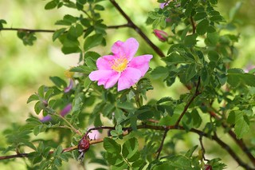

These flowers can be found in many types of areas. Mountains, hillsides, woodland, and even by streams. They are a shrub plant that can get pretty tall if it wants too. The flowers on these shrubs come in varying shades of pink. They typically are either fairly vibrant or a pale colour. They are an edible flower with most parts of it being safe to eat. The petals are used in salads, tea, or for garnishes. And the ripe rose hips are also typiclly used in teas, though they have a more bitter flavor.
Green-Leaf Manzanita flowers have a very interesting leaf shape. A very round oval shape instead of any sort of points. The flowers are a pale pink and rock an urn shape/ They6 can be found in varying elevations typically found in forests and mountians. they flower in close knit clusters.
These flowers have a light pink to almost white colour. They grow on small shrubs that hang close to the ground. They flower outwards or downwards and can be found in forrest clearings or hillsides. They hang around the rocky mountains area.